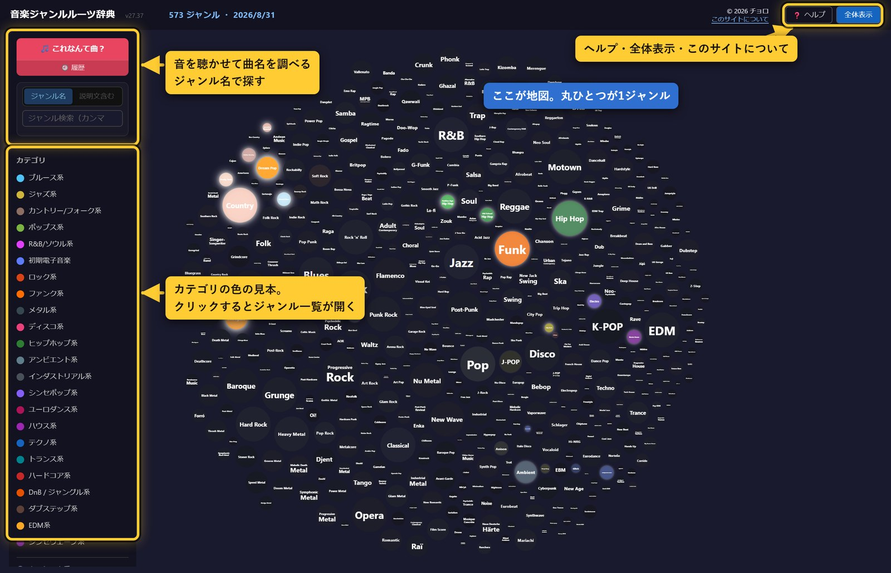
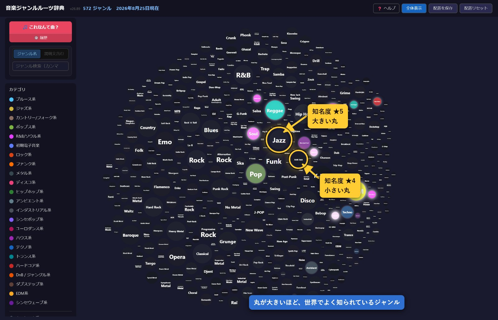
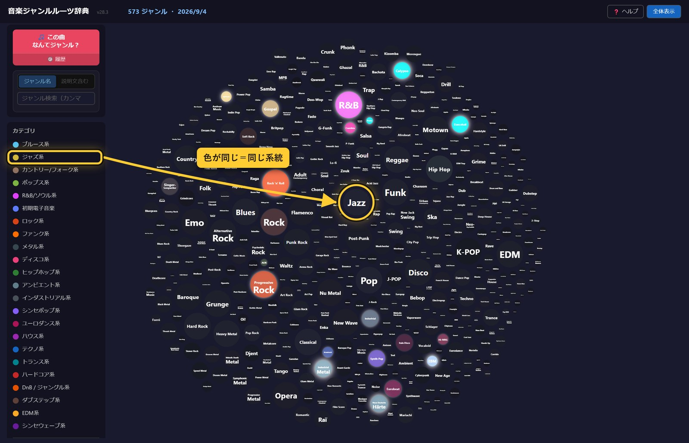
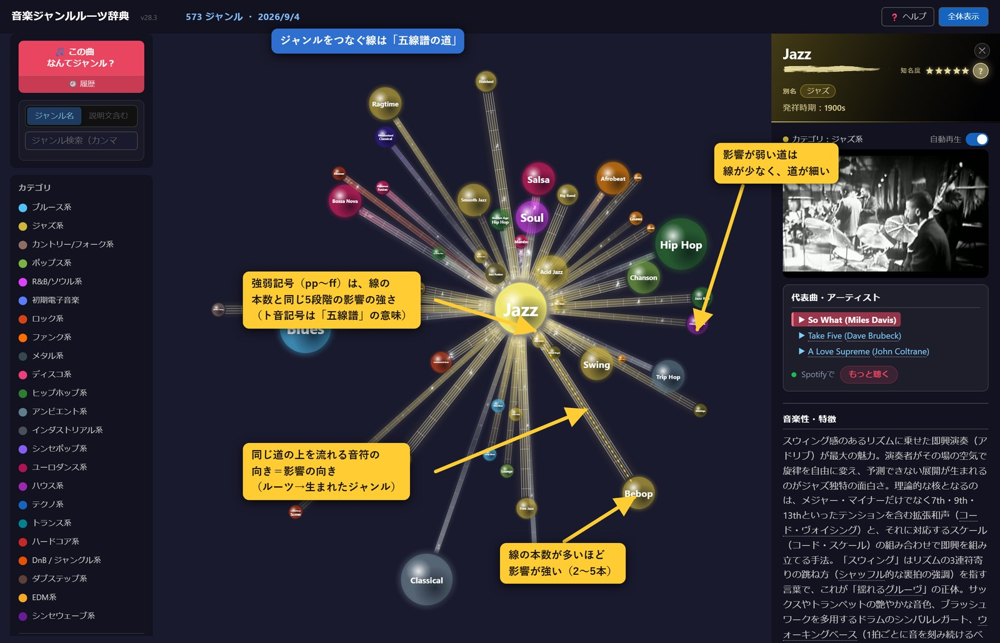
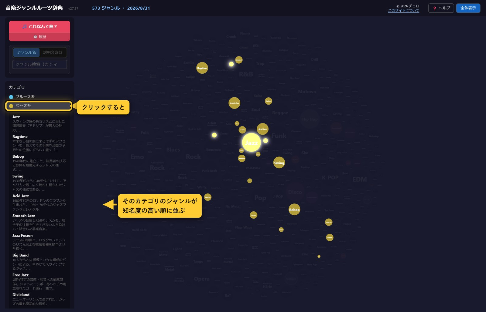
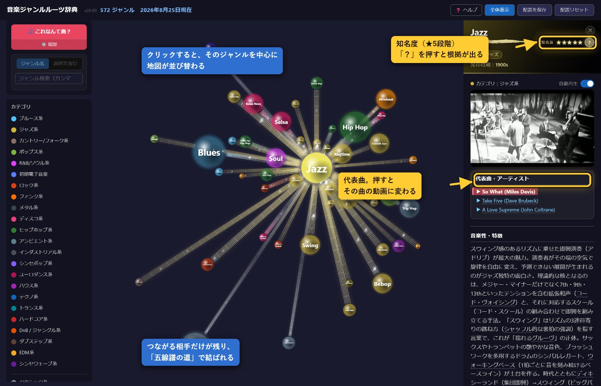
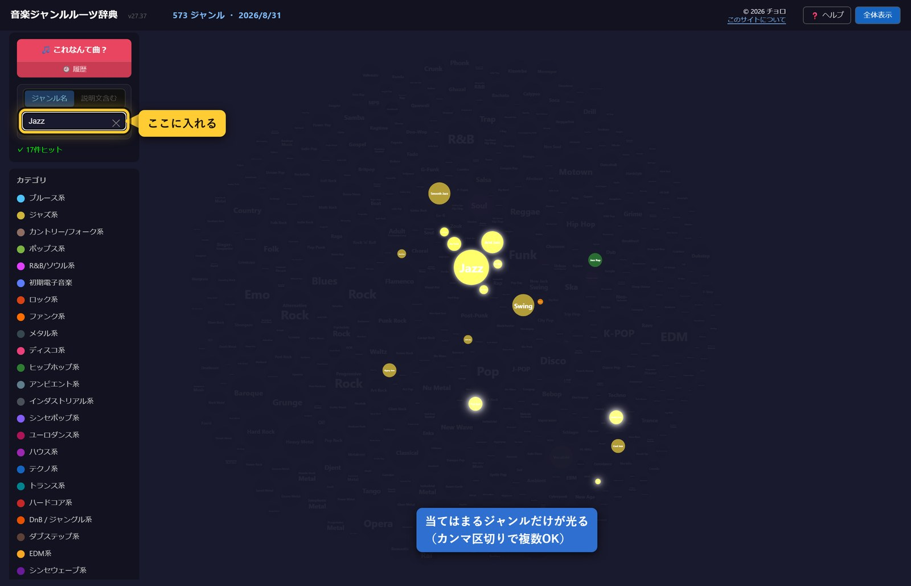

「自分の好きな音楽って、どこから来たんだろう」—— そう思ったことはありませんか。
誰でも、聴く音楽は少し偏っています。日本で育てば J-POP やバラードが耳になじみ、 海外のものはロックばかり、というように。それは悪いことではありません。 ただ、そのすぐ隣に、まだ出会っていない「好きになるはずの音楽」があるとしたら、 もったいないと思いませんか。
この事典は、572のジャンルをつながりの地図にしたものです。 好きなジャンルをひとつ選ぶと、そこから枝が伸びます。 そのジャンルを生んだ親、そこから生まれた子、 影響を与え合った仲間。たどっていくうちに、 名前も知らなかったジャンルにぶつかります。試しに1曲聴いてみる。 ——「あ、これ好きかも」。
作者自身がそうでした。ロックのルーツをさかのぼり、 枝分かれの先を聴いていくうちに、まったく縁がないと思っていたトランスに行き着き、 それが自分の好みだと気づいたのです。名前だけ知っていて「よく分からない」で終わっていた音楽が、 ちゃんと自分の好きな音だった——そういう発見をしてほしくて、これを作りました。
ジャンルごとに代表曲がすぐ聴けます。 説明を読んでから聴いてもいいし、まず聴いてから説明を読んでもいい。 「この曲、何ジャンルなんだろう」を音から調べることもできます。
音楽の地図を、気の向くままに歩いてみてください。 寄り道の先に、次のお気に入りがあります。

マップに散らばっている丸（ノード）ひとつひとつが、ひとつの音楽ジャンルです。 572個の丸が、全部そこに並んでいます。
ジャンルどうしのつながりは、全体の地図では線として出ていません。 1,600本以上あるので、全部いっぺんに出すと真っ白になってしまうからです。 丸をひとつクリックすると、そのジャンルにつながる相手だけが残り、 線（→ 五線譜の道）で結ばれます。

丸が大きいほど、世界でよく知られているジャンルです。5段階あり、 1段上がるごとに直径が約1.6倍（面積にすると約2.5倍）になります。 いちばん小さい★1といちばん大きい★5では、直径で約6倍のちがいがあります。 Jazz や Rock のような大物は大きく、ごく一部の人だけが知っているジャンルは小さくなります。 この大きさは感覚で決めたものではなく、公開されている3つのデータを数えて決めています（→ 知名度のしくみ）。

色は「ブルース系」「ジャズ系」「ロック系」といった系統（カテゴリ）を表します。 画面左側に色の一覧があるので、どの色が何系かはそこで確認できます。 一覧の系統名をクリックすると、その系統のジャンルだけがマップ上で光ります。

ジャンルどうしをつなぐ線は、太いほど影響が強いことを表します。 こちらも5段階で、5つの要素のうちいくつが受け継がれたかで決まります（→ 影響の強さのしくみ）。
左側の色の見本（カテゴリ）をクリックすると、その系統に属するジャンルの一覧が開きます。 並び順は知名度の高い順なので、上から順に「その系統を代表するジャンル」が並びます。 一覧のジャンル名をクリックすると、そのジャンルの説明パネルが開きます。 地図のほうも、その系統のジャンルだけが色付きで残り、ほかは暗くなります。


丸をクリックすると開く、右側のパネルの見方です。
同じジャンルが複数の呼ばれ方をしていることがあります。ジャンル名のすぐ下に、 その別の呼び名を小さなタグで並べています。
たとえば「グラムメタル」は「ヘアメタル」とも呼ばれます。 「ヘアメタル」で探してグラムメタルが出てきても、ここを見れば同じものだと分かります。
ジャンル名の右に 知名度 ★★★★☆ と星が出ます。 星の数が多いほど、世界でよく知られているジャンルです。マップの丸の大きさもこれで決まります。
この星は感覚で付けたものではありません。誰でも確認できる公開データを3つ数えて、 それぞれ1〜5点を付け、合計（3〜15点）から5段階を出しています。
| 点 | ウィキペディアの言語版 | 年間の閲覧数 | 代表曲の再生回数 |
|---|---|---|---|
| 5点 | 100か国語以上 | 60万回以上 | 5,000万回以上 |
| 4点 | 45〜99 | 25万〜60万回 | 1,000万〜5,000万回 |
| 3点 | 25〜44 | 10万〜25万回 | 200万〜1,000万回 |
| 2点 | 12〜24 | 3万〜10万回 | 30万〜200万回 |
| 1点 | 11以下 | 3万回未満 | 30万回未満 |
| 3つの合計 | 知名度 | 例 |
|---|---|---|
| 14点以上 | ★★★★★ | Jazz、Rock、Pop、Hip Hop |
| 11〜13点 | ★★★★☆ | Bebop、Techno、Ragtime |
| 8〜10点 | ★★★☆☆ | Tech House、Afro House |
| 5〜7点 | ★★☆☆☆ | Detroit Techno、Acid Techno |
| 4点以下 | ★☆☆☆☆ | Skullstep、Deep Dubstep |
星の右にある ？ を押すと、そのジャンルの実際の数字と、それが何点になったかが出ます。 もう一度押すか、画面のどこかを押すと閉じます。
ウィキペディアに独立した記事が無いジャンルは、親ジャンルの数字を借りずに1点として数えています。 たとえば「Contemporary Blues」に Blues の閲覧数を当てると、Blues 自身と同じ点になってしまうためです。
パネルの下のほうに、影響を受けた／与えたジャンルが並びます。 それぞれに 影響Lv 3 のような数字が付いています。
これは5つの要素のうち、いくつが受け継がれたかを数えたものです。
5つ全部を受け継いでいれば影響Lv 5、リズムだけなら影響Lv 1です。 どの要素が当てはまったかは、名前の下の5つの四角で分かります（光っているものが当てはまった要素）。 マップ上の線の太さも、この数字で変わります。
説明文の中に、下に点線がついた言葉があります。 そこにカーソルを合わせる（スマホでは軽く押す）と、その言葉の意味がふきだしで出ます。
「シンコペーション」「ペンタトニック」のような音楽用語だけでなく、 地名・人名・レーベル名なども説明しています。読みながら分からない言葉が出てきたら、 点線がついていないか探してみてください。

画面左側の検索欄にジャンル名を入力すると、マップ上で該当するジャンルが光ってハイライトされます。カンマ区切りで複数のジャンル名を一度に検索することもできます。
今流れている曲や、持っている音源が何ジャンルなのか分からないとき、聴かせるだけで調べられる機能です。左側の 🎵 これなんて曲？ ボタンから開きます。
検索や「これなんて曲？」でヒットしなかったジャンルは、その場で追加をリクエストできます。リクエストされたジャンルは自動で情報が作成され、内容を確認したうえで辞典に追加されます（すぐには反映されないことがあります）。
作られる情報が正しいかどうかは、次の順で確かめています。
それでも誤りが残ることはあります。お気づきの点があれば、次の「間違いを見つけたら」から教えてください。
説明文が事実と違う、代表曲の動画が別のジャンルのものになっている、といった間違いに気づいたら、ジャンルの説明パネルにある ✎ このジャンルについて修正依頼 から教えてください。内容を確認したうえで、必要な修正が反映されます。
どんな些細な指摘でも大歓迎です。こうした指摘の積み重ねで、この辞典はより正確なものになっていきます。